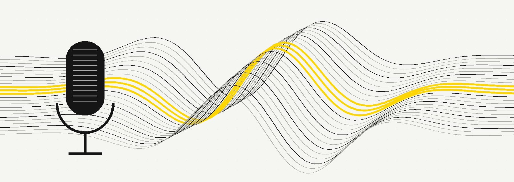

EARcam: Search By Sound¶
EARcam listens for an alarm through a USB microphone and combines sound measurements with aircraft positions to estimate a useful search location. Start by listening on the bench, then try the supplied simulated flight.
Sound-search terms | Simulated flights

Listen On The Bench¶
From the Sensoraia root:
Use the actual ALSA device listed on your computer, not necessarily the example name. Stop with Ctrl+C. Place the intended alarm in a controlled test area and confirm its tone is detected before adding aircraft noise.
Keep microphone gain and mounting fixed during a comparison. A dramatic volume knob is useful for music and much less useful for measuring whether you moved closer to a sound source.
What The Readings Mean¶
EARcam looks for useful tone energy rather than treating every loud sound as the desired alarm. Its signal checks reduce the influence of unrelated noise, but wind, propulsion, reflections and alarm direction still matter.
Digital microphone levels are normally dBFS, not calibrated dB SPL. Relative changes can be useful with fixed gain; physical sound-pressure and rough distance estimates need the appropriate microphone calibration.
| Observation | Interpretation |
|---|---|
| Stronger clean alarm tone | Useful evidence, not a location by itself |
| Loud broadband noise | May be wind/propulsion rather than the target |
| Clipped samples | Reduce excessive gain and repeat the check |
| No accepted tone | Check device, frequency band, gain and the actual alarm |
How It Finds The Source¶
One microphone does not point at the alarm. Movement supplies different measurement positions; the software fits a sound model to useful readings and reduces the effect of outliers. It does not simply select the single loudest sample's coordinates.
At height, small horizontal movements near the source can change loudness very little. Several useful passes around an area provide better geometry than assuming the peak of one pass is an exact fix. Wind and reflections can also distort the apparent peak.
The result is a search aid. Independent measurements are needed before claiming position accuracy or making a rescue or flight-safety decision.
Try A Simulated Search¶
Use the Paparazzi demo setup. The EARcam session runs USHER natively with a simulated alarm source, so no physical microphone or MORA board is needed:
Start Paparazzi Center (cd ~/paparazzi && ./paparazzi), select
userconf/SENSORAIA/sensoraia_demo_conf.xml, aircraft Easystar_3_EARCAM
(or your own fixed-wing aircraft assigned flight_plans/SENSORAIA/sensoraia_ear_cam_demo.xml),
and target nps, then click Build. In the Session tab select
userconf/SENSORAIA/sensoraia_demo_control_panel.xml and start
Sensoraia EARcam NPS. Wait for live telemetry/GPS in GCS Classic, then
click Takeoff; the plan climbs and enters its flower listening mission
automatically.
Watch the search pattern, result stage and normal landing. An accepted answer
can update TARGET; a timeout or unusable answer can finish without a fix.
A completed simulated search does not establish microphone performance.
Use With USHER¶
Choose the microphone device and a suitable alarm band in the actual USHER configuration. A separately managed live listening session can use:
The band is an example for the intended alarm, not a universal setting for every sound. Avoid another program owning the same input. Check the sensor alone before combining it with other workloads on MORA.
Capture uses nonblocking PCM reads with waits of at most 100 ms. Two seconds without PCM progress, including persistent device suspension, fails the worker so USHER can supervise its restart. This is a device-progress check, not a sound-level gate: quiet audio still contains PCM samples.
USHER rejects timed measurements whose original audio-window end is more than 500 ms old; a late classifier completion cannot make old audio fresh again. Unknown chunk timing leaves the whole classifier window explicitly unaligned. These are software policies, not measured USB latency or synchronization accuracy.
Inspect The Search Result¶
Keep the recorded observations, position context and generated sound picture. The JPEG is a computed heat map, not a photograph taken by a microphone. Inspect result validity before treating it as a current target.
Replay And View A Heatmap On A Map¶
The replay and overlay applications run on the development PC. Replay rebuilds the EARcam heatmap from a saved session log; overlay adds satellite context and redraws the source marker and optional observation/flight tracks. This is a visual review tool, not another localization step, and it never changes the recorded measurements.
Build both native programs from the Sensoraia root, then replay the session log
to create the decorated image, its .geo sidecar and an undecorated _field.jpg:
make -j32 ear_heatmap_replay ear_heatmap_overlay
bin/ear_heatmap_replay /path/to/ear-session.csv /path/to/ear-result.jpg
Overlay that result, optionally adding the session samples, aircraft track, search center and a known simulation source:
bin/ear_heatmap_overlay /path/to/ear-result.jpg \
--log /path/to/ear-session.csv \
--track /path/to/aircraft-track.csv \
--search 48.8105,7.8516,25 \
--truth 48.8105,7.8516
The default output is ear-result_sat.jpg. The application automatically uses
the matching _field.jpg and .geo files when present; keep all three replay
outputs together. --search takes latitude, longitude and optional radius in
metres. Use --truth only when the known position is available, such as in a
simulation; it is drawn separately from the estimated loudest spot.
Google imagery reuses Paparazzi GCS's existing
~/.local/share/paparazzi/pprzgcs/map/GOOGLE/{z}/{x}/{y}.jpeg cache by default
(or $XDG_DATA_HOME/paparazzi/pprzgcs/map when XDG_DATA_HOME is set).
--source esri selects Esri imagery, and --cache DIR chooses the cache root.
Existing tiles are opened directly; there is no network-library dependency.
On a cache miss, the program uses the system curl command to fetch that tile.
Add --offline to require a complete local cache and fail instead of attempting
a download.
Tile imagery is visual context only: it cannot improve acoustic evidence or
turn an uncertain estimate into ground truth.
Use bin/ear_heatmap_overlay --help for zoom, opacity, margin, obstacle-grid,
and other options. An obstacle CSV, when available, must contain
x_east_m,lat,lon,mnh_m columns.
Optional ONNX Sound Classification¶
Select a compatible assignment in earcam_settings.ini. The model must match
the declared PCM sample rate and window; its probability is separate from
raw microphone level. A classifier does not automatically provide a geographic
source. See model selection.
Why Height And More Than One Pass Matter¶
In an ideal free field, doubling source distance reduces sound pressure by about 6 dB. On an aircraft, slant distance includes height: at 40 m above a source, moving 10 m sideways changes the distance only to about 41.2 m. That is roughly 0.26 dB, easily obscured by ordinary noise.
This broad, nearly flat loudness peak is why the loudest single reading is not an exact ground location. Passes from different directions help constrain the fit. Reflections, alarm orientation and propulsion can distort the pattern; the distance relationship explains the method, not a guaranteed useful range for every installation.
Read Level, Tone And Quality Together¶
Where the selected mode reports these diagnostics:
| Reading | What It Tells You |
|---|---|
| Level | Strength of the selected tone, not all nearby sound |
| Frequency | Which tone is strongest within the selected search band |
| Contrast | How distinct that tone is from the remaining in-band sound |
| Envelope/trend | Smoothed change across pulses: approaching, receding or steady |
| Alarm/clip flags | Whether tone checks passed or the recording range was exceeded |
Compare a clean alarm recording with quiet/background and propulsion/noise conditions. Strong RMS alone does not identify the alarm. Keep microphone, gain and mounting fixed when comparing positions or runs.
Troubleshooting¶
Check the correct audio device, gain, clipping and whether the alarm is actually within the selected band. Compare quiet and propulsion/noise conditions. If readings change after moving the microphone or changing gain, start a new controlled comparison rather than combining incompatible measurements into one search.
Glossary¶
Sound and shared project definitions live in the Sensoraia glossary, including its dedicated EARcam section.